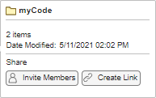
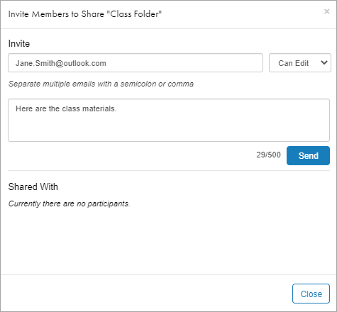
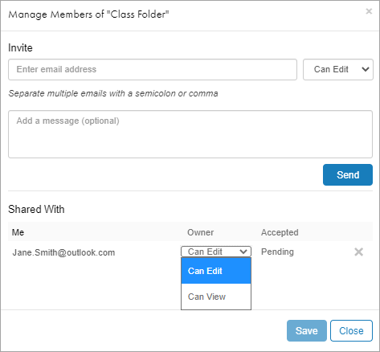
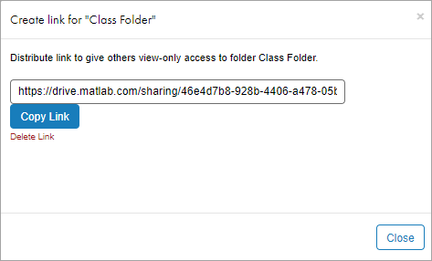
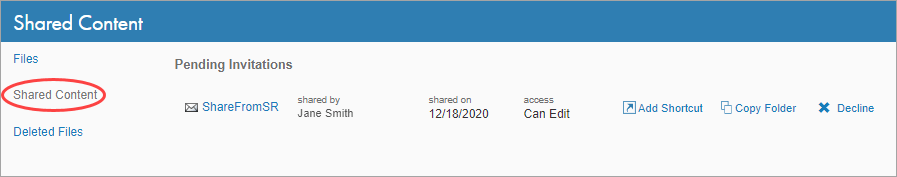
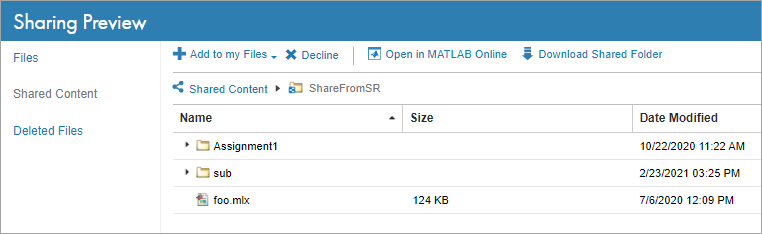
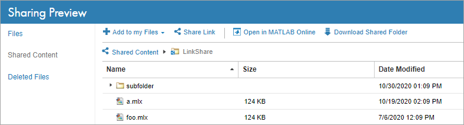
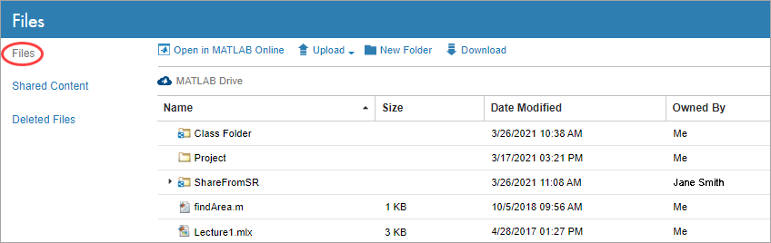
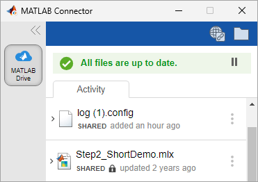

Share Folders Using MATLAB Drive
You can collaborate with others and allow them to view and edit your files by sharing folders from MATLAB® and MATLAB Drive™ online. You can share a folder by inviting individual members to have access to the folder or by sharing a link to the folder.
When you send someone a personal invitation to a shared folder, they can preview it and add it to their files. They can also edit its contents if you grant them permission to do so. When you send someone a view-only link, they can preview it and add it to their files, but not edit it. Previewing and adding shared folders to your files can only be done in MATLAB Drive online and requires a MathWorks Account.
To share a folder from MATLAB, you must be running MATLAB R2019b or later, MATLAB Connector must be running, and the folder you choose to share must be in your MATLAB Drive. If you are working in MATLAB Online™, you do not need MATLAB Connector to share folders since sharing is always enabled.
Note
Security Considerations: If a folder contains symbolic links to other folders on your system, sharing that folder may grant recipients of the shared folder access to other locations on your system. MATLAB Drive does not create symbolic links, but it does follow existing symbolic links.
Share Folder by Personal Invitation
You can share a folder from MATLAB and MATLAB Drive online by sending a personal invitation. Sharing a folder by personal invitation allows you to give others both view and edit permission to your files. To send an invitation:
Right-click the folder and select Share > Invite Members. If you have already shared the folder by personal invitation, select Manage Members instead. Alternatively, click the Preview button to the right of the folder, and in the Share section, select from the available options.

In MATLAB Drive online, you also can click the Share button and select from the available options.
In the Invite section of the invitation, enter the email addresses of the people that you want to share this folder with. To share the folder with multiple people, enter multiple email addresses separated by semicolons or commas.
If you have previously shared a folder with others, you also can select from the list of people that you have recently and frequently shared with. Only people who have previously accepted an invitation from you are included in the list. To filter the list of suggestions, enter the first name, last name, or email address of the person you want to share with.
Select Can View to share the folder as a read-only folder or Can Edit to allow invited members to edit its contents. If you want to share the folder with multiple people using different permissions, send each invitation separately.
Optionally, enter a message to include with the invitation.
Click Send. MATLAB Drive sends an email to the people you have invited.

Change Member Permission
Once you personally invite someone to share a folder, you can change their folder permissions from MATLAB and MATLAB Drive online. For example, if you invite someone to share a folder as a read-only folder, you can change their permissions to allow them to edit its contents.
To change the folder permissions for an invited member, right-click the shared folder and select Share > Manage Members. In the Shared With section, next to the address of the invited member, select a different folder permission. Then, click Save to update the permissions. Alternatively, select the Preview button to the right of the folder, and in the Share section, select Manage Members.
In MATLAB Drive online, you also can click the Share button and select Manage Members.

Revoke Personal Invitations
Once you personally invite someone to share a folder, you can revoke their access.
To revoke access, right-click the shared folder and select Share > Manage Members. Click the X next to the name of the member to revoke shared access.
In MATLAB Drive online, you also can click the Share button and select Manage Members. Alternatively, select the Preview button to the right of the folder, and in the Share section, select Manage Members.
Share Folder With View-Only Link
You also can share a folder from MATLAB and MATLAB Drive online by creating and distributing a view-only link to the folder. Sharing a folder using a view-only link gives others view permissions to your files. To create and distribute a view-only link to a folder:
Right-click the folder and select Share > Create Link. Click Create a view-only link to create the link. If you have already created a view-only link for the folder, select Manage Link instead. Alternatively, click the Preview button to the right of the folder, and in the Share section, select from the available options.
In MATLAB Drive online, you also can click the Share button and select from the available options.
Click Copy Link to copy the link to the clipboard.
Distribute the link to others, for example, by including it in an email.

Remove Shared Link
To remove access to a shared folder from a view-only link, right-click the shared folder and select Share > Manage Link. Click Delete Link and confirm the deletion by clicking Delete.
In MATLAB Drive online, you also can click the Share button and select Manage Link. Alternatively, select the Preview button to the right of the folder, and in the Share section, select Manage Link.
Members who gained access to the folder using the link will no longer have access to it, and anyone who tries to use the link in the future gets an error. Deleting the link does not cause any change in access to those who received a personal invitation to the shared folder. To change their access, see Change Member Permission.
Access Folders Shared with You
You can get access to a shared folder by receiving either a personal invitation or a view-only link. When you receive an invitation or a link, you can preview the contents of the shared folder. Then, to view and open the contents of the folder, and to edit them if permitted, add the folder to your files.
Preview Folder Shared by Personal Invitation
When you are personally invited to a shared folder, you receive an email with a link to the invitation. Click View Folder in the invitation to open the pending invitation in MATLAB Drive online.
To view all of your pending invitations in MATLAB Drive online, click Shared Content on the left side of the page.

When the invitation opens, MATLAB Drive online displays a preview of the shared folder. You can navigate the structure of the shared folder and preview individual files. You must be logged in with your MathWorks® account to preview the folder. To view and open the contents of the folder, and to edit them if permitted, add the folder to your files.

Preview Folder Shared by View-Only Link
When you receive a view-only link to a shared folder, open the link to preview it in MATLAB Drive online. When the preview opens, you can navigate the structure of the folder and preview individual files. Previewing a folder shared by link does not require a MathWorks account. To view and open the contents of the folder, add it to your files.

You can also forward the link to others. To get a new copy of the link, click Share Link. In the Share by Link dialog box, click Copy Link to copy the link to the clipboard.
Add Shared Folder to Your Files
To view and open the contents of a folder shared with you, and to edit them if permitted, add the folder to your files. You can add a folder to your files either by creating a shortcut to the shared folder, or by creating a copy of the shared folder that is only visible and accessible to you.
To create a shortcut to the shared folder, in the MATLAB Drive online folder preview, click the Add to my Files button and select Add Shortcut. To create a copy of the shared folder that is only visible and accessible to you, click the Add to my Files button and select Copy Folder. MATLAB Drive adds the folder to your files and opens the Files view. You must be logged in with your MathWorks account to add a shared folder to your files.

If you have MATLAB Connector installed, the Connector syncs the contents of the added shared folder to your local drive.
Manage Shared Folder
If you have edit permissions to a shared folder, you can edit its contents, as well as move, rename, and delete the folder itself.
MATLAB and MATLAB Drive online indicate shared folders using a shared folder icon ( or . If you have MATLAB Connector installed, the Connector indicates shared files in the Activity section by displaying SHARED below the file name. If you do not have edit permissions for the shared file, the Connector displays a padlock icon .

Edit Shared Folder
If you have edit permissions to a shared folder, you can edit the contents of the files and folders within that folder. You can edit the files in MATLAB Online, or, if you have MATLAB Connector installed, you can edit the files on your local drive. As you and other members of the folder make changes, the Connector keeps the shared folder on your local drive up-to-date.
Warning
It is possible that other participants with edit permissions are also editing the same files as you are. If this occurs, the most recently saved copy overwrites any other saved copies.
You cannot edit a shared file if you do not have edit permissions for the shared folder. If you do not have edit permissions for a shared file, MATLAB Connector displays a padlock icon below the file name in the Activity section.
Move or Rename Shared Folder
You can move a shared folder to a new location within your MATLAB Drive. If you have edit permissions to a shared folder, you also can move or rename its contents. You can move or rename the folder in MATLAB Drive online and, if you have edit permissions to the folder, from MATLAB.
If you move or rename a shared folder:
The folder is moved or renamed only for you.
Others with access to the shared folder do not see the changes. This is true even if you are the owner of the shared folder.
If you have edit permissions for a shared folder, you can move or rename content inside it. When you move or rename content inside a shared folder, the moved or renamed content is moved or renamed for all members of the folder.
Note
If you move one shared folder into another, the one that you move takes on the permissions of its new parent. For example, if a member can edit the parent folder, they can now edit the folder that you move into it.
Delete Shared Folder
You can delete a shared folder in your MATLAB Drive. If you have edit permissions to a shared folder, you can also can delete its contents. You can delete the folder from MATLAB Drive online and, if you have edit permissions to the folder, from MATLAB.
If you delete a shared folder:
MATLAB Drive deletes the folder and its contents only from your MATLAB Drive.
All others with access to the folder, whether by personal invitation or view-only link, continue to have access to it.
The folder no longer counts towards your storage quota.
If you have edit permissions for a shared folder, you can delete content inside it. When you delete content inside a shared folder:
MATLAB Drive deletes the content from your MATLAB Drive and for all other members of the folder.
The content no longer counts towards your storage quota.
Permanently Delete Shared Folder
When you delete a shared folder or its contents, MATLAB Drive moves the deleted items to your Deleted Files folder. You then can choose to permanently delete those items from your MATLAB Drive.
Note
MATLAB Drive permanently deletes content (including shared folders) in your Deleted Files folder after 30 days or if your Deleted Files folder is over the deleted files storage quota.
If you permanently delete a shared folder from your Deleted Files folder:
The folder and its contents are permanently deleted only from your MATLAB Drive.
All others with access to the folder continue to have access to it.
If you are the owner of the shared folder, then the folder becomes ownerless. When a folder is ownerless, no new members can gain access to the folder, whether by personal invitation or view-only link. In addition, MATLAB Drive deletes all pending invitations to access the folder.
If you permanently delete content from a shared folder:
The content is permanently deleted from your MATLAB Drive and for all members of the folder.
You cannot permanently delete content from a shared folder that has active members with edit permissions to the folder.
Sharing Limitations
There are limits on how many folders you can share, how many people you can share each folder with, and how much data your MATLAB Drive can hold.
User Sharing Limitations
You can have up to 100 shared folders in your MATLAB Drive. This total includes folders shared by you (regardless of whether others have accepted your invitation) and folders shared by others that you have added to your files. Sub-folders in shared folders are not included in this limit.
If you reach the limit of 100 shared folders:
You cannot share additional folders.
You cannot add additional shared folders to your files.
If you receive an invitation to access a shared folder, you can preview the files but you cannot add a shortcut to the folder to your files. You can, however, create an unshared copy of the folder and add it to your files. To create an unshared copy of the folder, in MATLAB Drive online, select the folder, click the Add to my Files button, and select Copy Folder.
Folder Sharing Limitations
The number of people that you can share a folder with depends on whether you have an eligible MATLAB license that is current on Software Maintenance Service.
If you have an eligible MATLAB license:
You can share a folder with 1,000 people using a view-only link and with an additional 100 people using a personal invitation.
If you do not have an eligible MATLAB license:
You can share a folder with 10 people using a view-only link and with an additional 10 people using a personal invitation.
After you have reached your limit for personal invitations you cannot invite others to share that folder. If a member leaves the shared folder or declines the invitation to access the shared folder, then you can send additional invitations.
When sharing a folder using a view-only link, when the number of people accessing the link reaches the folder maximum, others who try to use that link cannot access the folder.
Storage Quota Limitations
When you add a shared folder to your files, the content of that shared folder is included as part of your total storage allotment, regardless of whether you have edit or read-only permissions to the folder. If a member of the folder adds or deletes content, your storage allotment updates accordingly.
If you exceed your maximum storage allotment:
Others with edit permissions can add content to your shared folders, but you cannot.
You cannot add additional folders to your files or create new invitations or shared links to a folder.
For more information, see Storage Quota.